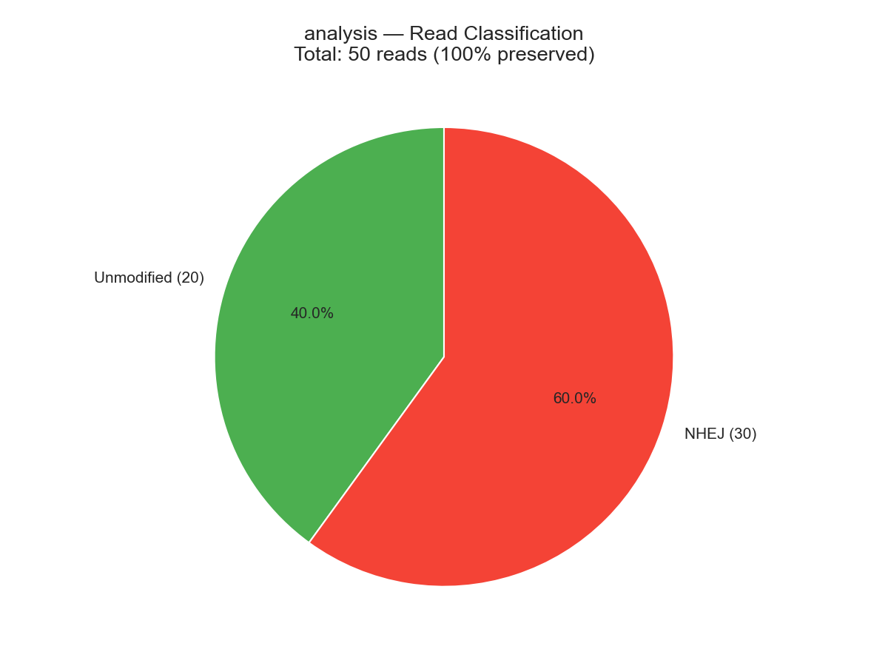
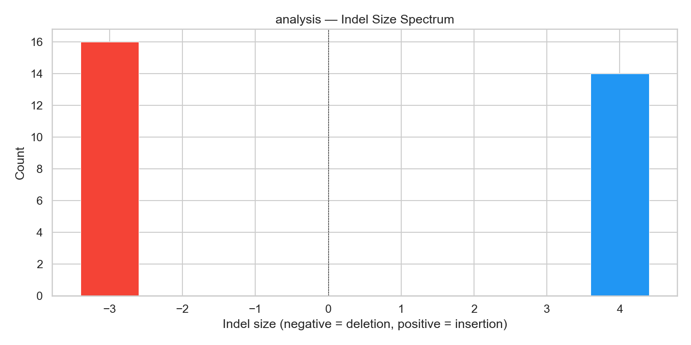
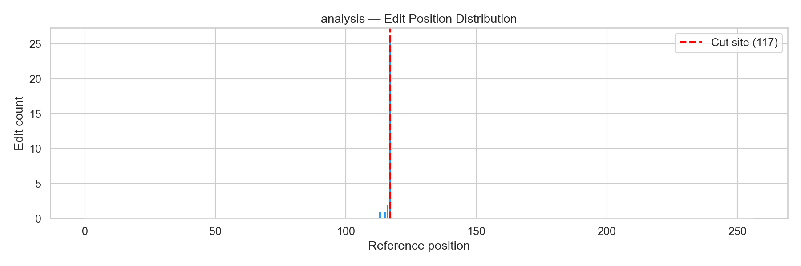
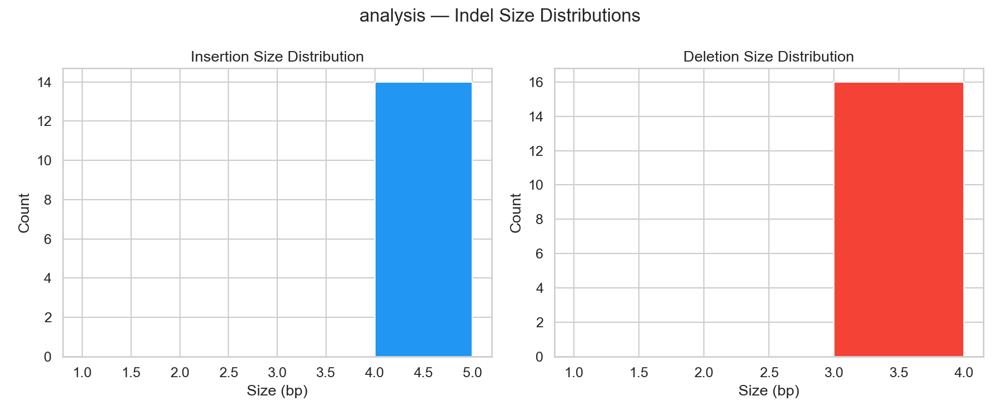

Sample: analysis | Reference length: 257 bp | Cut site: 117




| Read | Classification | Identity | Ins | Del | Sub | Method |
|---|---|---|---|---|---|---|
| read_0 | unmodified | 100.00% | 0 | 0 | 0 | global |
| read_1 | NHEJ | 100.00% | 0 | 3 | 0 | global |
| read_2 | NHEJ | 98.47% | 4 | 0 | 0 | global |
| read_3 | NHEJ | 100.00% | 0 | 3 | 0 | global |
| read_4 | NHEJ | 100.00% | 0 | 3 | 0 | global |
| read_5 | NHEJ | 98.47% | 4 | 0 | 0 | global |
| read_6 | NHEJ | 98.47% | 4 | 0 | 0 | global |
| read_7 | NHEJ | 100.00% | 0 | 3 | 0 | global |
| read_8 | NHEJ | 98.47% | 4 | 0 | 0 | global |
| read_9 | unmodified | 100.00% | 0 | 0 | 0 | global |
| read_10 | NHEJ | 98.47% | 4 | 0 | 0 | global |
| read_11 | unmodified | 100.00% | 0 | 0 | 0 | global |
| read_12 | NHEJ | 100.00% | 0 | 3 | 0 | global |
| read_13 | NHEJ | 100.00% | 0 | 3 | 0 | global |
| read_14 | NHEJ | 100.00% | 0 | 3 | 0 | global |
| read_15 | NHEJ | 98.47% | 4 | 0 | 0 | global |
| read_16 | unmodified | 100.00% | 0 | 0 | 0 | global |
| read_17 | unmodified | 100.00% | 0 | 0 | 0 | global |
| read_18 | unmodified | 100.00% | 0 | 0 | 0 | global |
| read_19 | NHEJ | 98.47% | 4 | 0 | 0 | global |
| read_20 | NHEJ | 98.47% | 4 | 0 | 0 | global |
| read_21 | NHEJ | 100.00% | 0 | 3 | 0 | global |
| read_22 | NHEJ | 98.47% | 4 | 0 | 0 | global |
| read_23 | unmodified | 100.00% | 0 | 0 | 0 | global |
| read_24 | NHEJ | 100.00% | 0 | 3 | 0 | global |
| read_25 | NHEJ | 98.47% | 4 | 0 | 0 | global |
| read_26 | NHEJ | 98.47% | 4 | 0 | 0 | global |
| read_27 | unmodified | 100.00% | 0 | 0 | 0 | global |
| read_28 | unmodified | 100.00% | 0 | 0 | 0 | global |
| read_29 | NHEJ | 100.00% | 0 | 3 | 0 | global |
| read_30 | NHEJ | 98.47% | 4 | 0 | 0 | global |
| read_31 | unmodified | 100.00% | 0 | 0 | 0 | global |
| read_32 | unmodified | 100.00% | 0 | 0 | 0 | global |
| read_33 | NHEJ | 100.00% | 0 | 3 | 0 | global |
| read_34 | unmodified | 100.00% | 0 | 0 | 0 | global |
| read_35 | NHEJ | 100.00% | 0 | 3 | 0 | global |
| read_36 | NHEJ | 98.47% | 4 | 0 | 0 | global |
| read_37 | unmodified | 100.00% | 0 | 0 | 0 | global |
| read_38 | unmodified | 100.00% | 0 | 0 | 0 | global |
| read_39 | NHEJ | 98.47% | 4 | 0 | 0 | global |
| read_40 | unmodified | 100.00% | 0 | 0 | 0 | global |
| read_41 | NHEJ | 100.00% | 0 | 3 | 0 | global |
| read_42 | NHEJ | 100.00% | 0 | 3 | 0 | global |
| read_43 | unmodified | 100.00% | 0 | 0 | 0 | global |
| read_44 | unmodified | 100.00% | 0 | 0 | 0 | global |
| read_45 | unmodified | 100.00% | 0 | 0 | 0 | global |
| read_46 | NHEJ | 100.00% | 0 | 3 | 0 | global |
| read_47 | unmodified | 100.00% | 0 | 0 | 0 | global |
| read_48 | unmodified | 100.00% | 0 | 0 | 0 | global |
| read_49 | NHEJ | 100.00% | 0 | 3 | 0 | global |